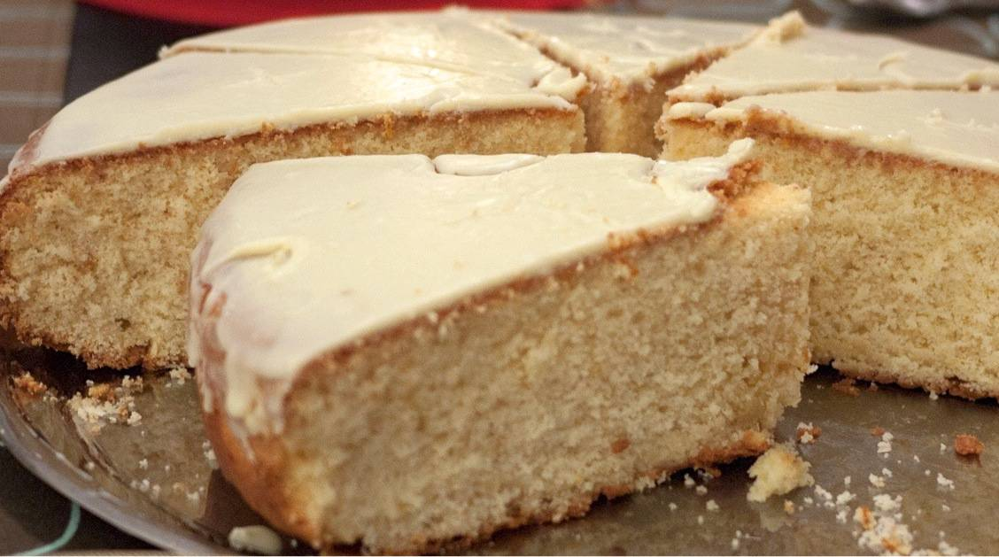

Vasilopita
Vasilopita

Description
Vasilopita is the traditional Greek cake or bread served at midnight on New Year’s Eve to celebrate the life of Saint Basil. After baking the Vasilopita cake, a coin is inserted through the base. When cut, the person who finds the coin is said to be granted luck for the rest of the year!
Vasilopita can be made of a variety of doughs, depending on the region, with almost every family having their own unique recipe. There are two main variations of Vasilopita – the cake version, which is this recipe here and the tsoureki vasilopita version, which is the same as an easter Tsoureki and my Tsoureki in a bread machine but rather shaped in a tin!
In most Greek households, the cake is served right after midnight on New Year’s Day, while some also serve it later in the day after the traditional New Year meal and together with some Melomakarona and kourabiedes!
Ingredients (for 16 portions)
For the cake:
- 375g butter
- 600g sugar
- 6 eggs
- pinch of salt
- zest of 2 oranges
- 1/2 cup orange juice
- 200g strained yogurt
- 1 tsp vanilla extract
- 750g self-rising flour, sifted
For the glaze:
- 450g icing sugar
- 5 tbsps hot water or milk
- 2 tsp vanilla extract
Steps
- Sstart by dividing the eggs into yolks and whites. Place the egg whites in the your mixer bowl and add a pinch of salt. Make sure your egg whites, bowl and whisk attachments are clean and free of any water. Whisk the egg whites until the mixture is very thick and glossy and a long trailing peak forms when the whisk is lifted (meringues). Place the mixture in a bowl and set aside.
- Clean out your mixer bowl and add the butter and sugar. Using the paddle hook or the creaming attachments whisk for about 20 minutes, until the butter is creamy and fluffy like whipped cream. Add the egg yolks, one at a time, whilst mixing, allowing time for each one to be absorbed, before adding the next. Pour in the orange juice, the vanilla extract, the orange zest, the yogurt and mix to combine.
- Remove the bowl from your mixer and add 1/3rd of the sifted flour and blend with a spatula. Add 1/3rd of the meringues and blend with light circular movements from the bottom up. Repeat with the rest of the flour and meringue, adding 1/3rd of the flour, mix, add 1/3rd meringue until all your ingredients are combined.
- Preheat the oven to 200C / 390F using both top and bottom heating elements. Alternatively set to 180C/356F fan.
- Select a non stick cake tin approx. 30-35cm in diameter (12-14 inch). Butter your vasilopita tin and dust with some flour. Alternatively, line with some parchment paper. Pour in your vasilopita mixture and spread it evenly with your spatula.
- Place the cake tin in the preheated oven, on the lower third rack, turn the heat down to 175C / 350F or 160C/320F fan and bake for approximately 60 minutes, until nicely coloured and cooked through. Make sure you don’t open the oven in the first 30 minutes of baking as your Vasilopita will collapse! Stick a wooden skewer or toothpick in the middle of the cake to check if your cake is ready. If it comes out clean, then your vasilopita cake is done!
- Let your vasilopita cake cool down completely and invert the pan on a plate. If its not cold it may break! Using a second plate, invert again so the top of the cake is on top. Wrap a coin with aluminium foil and stick it in the cake. Invert the vasilopita on a serving platter with the bottom of the cake facing upwards. Having a completely flat surface will make your glaze go on so much easier and will be nice and flat.
- Prepare the glaze for your Greek new year’s cake. In a large bowl add all the ingredients and blend with a spatula until the glaze is smooth and glossy. If needed, add a little bit more hot water. The glaze should have a glue like consistency but be perfectly smooth when blending with the spatula. Top the vasilopita with the glaze and even out with a flat spatula. Don’t forget to carve the number of the year on top of the glaze or use some toasted almonds to shape it! Enjoy!